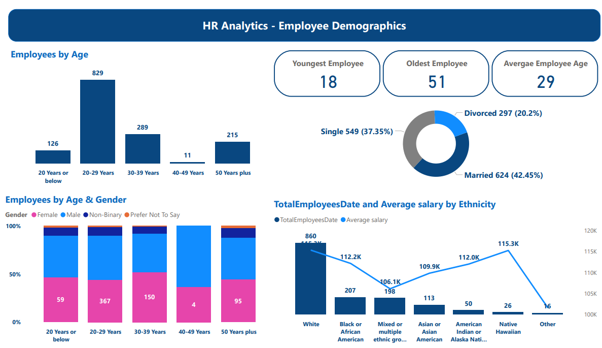

The report
What it looks like
Click any image to view it full size.
1. Overview

2. Employee demographics

A four-page Power BI report on a 1,470-person workforce: who works where, how the workforce is made up, how each employee's reviews have moved over time, and where staff turnover is highest.
Payroll is usually the largest cost line, but the information that drives it (headcount by department, who is leaving, and why) tends to sit in HR spreadsheets that finance never sees.
Without it, headcount budgets and hiring plans are built on last year's numbers rather than on what is actually happening in the workforce.
Click any image to view it full size.

The company and employees are fictional, created for practice. No real employee data is used.
For technical readers: the Power BI file is on GitHub.